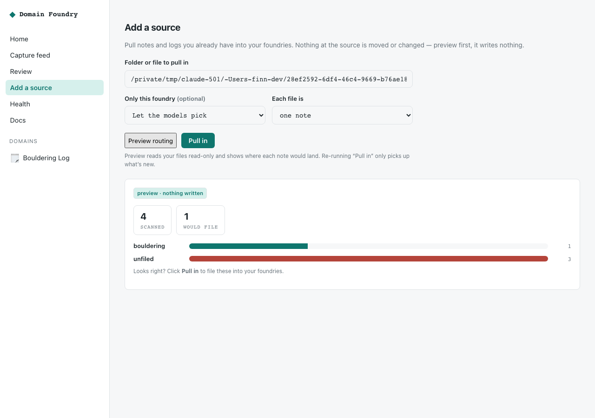

Bolt it onto your existing setup¶
Domain Foundry is a layer, not a rewrite. You almost certainly already have a setup — a Hermes agent, an Obsidian vault, folders of notes, log files. Domain Foundry sits on top and pulls what you choose into typed foundries. It never moves, edits, or cancels anything you already do.
Three things you'll do, in any order:
- Install alongside — nothing existing is touched.
- Point it at notes/logs you already have — read-only, and let the models file them into the right foundry (or a particular one).
- Add it to your Hermes — an additive plugin, so new captures flow in too.
1. Install alongside¶
pipx install domain-foundry-core # isolated; nothing else on your machine changes
domain-foundry init # a fresh workspace at ~/.domain_foundry
init creates its own two SQLite files. It does not read, move, or modify
your Hermes databases, your vault, or your config. Point it somewhere else with
--home ~/somewhere or DOMAIN_FOUNDRY_HOME if you keep everything in one place.
2. Pull in notes and logs you already have¶
First, stand up the foundry you care about (or several):
Then point ingest at an existing folder or file. Preview first with
--dry-run — it reads your files and shows where each note would land,
writing nothing:
$ domain-foundry ingest ~/Notes/climbing --dry-run
{
"scanned": 4,
"captured": 0,
"dry_run": true,
"by_domain": { "bouldering": 3 },
"unfiled": 1
}
Three climbing notes route to bouldering; the one stray note stays unfiled
(never dropped). Happy with it? Drop --dry-run:
$ domain-foundry ingest ~/Notes/climbing
{ "scanned": 4, "captured": 4, "skipped_existing": 0, "by_domain": { "bouldering": 3 }, "unfiled": 1 }
Run it again tomorrow and it only picks up what's new:
$ domain-foundry ingest ~/Notes/climbing
{ "scanned": 4, "captured": 0, "skipped_existing": 4, ... }
Guarantees:
- Read-only at the source. Your files are opened for reading and never
written, moved, or renamed. (Verified in CI:
tests/unit/test_ingest.pyasserts every source byte is unchanged after an ingest.) - Idempotent. Captures are keyed on
(channel, source_ref), so re-running is a safe no-op — import a folder daily on a cron without fear of duplicates. - Never dropped. A note that doesn't match any active foundry becomes an unfiled card, not a deletion.
Let the models pick, or aim at one foundry. By default the router files each
note into whichever active domain fits best — that's the --dry-run preview
above. Want everything in one place instead? Activate just that foundry and
ingest; matching notes land there, the rest stay unfiled for later.
Logs vs notes. --split file (default) makes one capture per file — right for
notes. --split lines makes one per line — right for append-only journals and
logs. Narrow what's read with --glob '*.md' and cap a first run with --limit.
Keep it in sync. --watch re-scans on an interval and pulls in only what's
new (idempotency does the rest):
$ domain-foundry ingest ~/Notes/climbing --watch --interval 30
Watching ~/Notes/climbing every 30s — Ctrl-C to stop.
scan: +3 new, 0 unchanged, by_domain={'bouldering': 3}
scan: +0 new, 3 unchanged, by_domain={}
scan: +1 new, 3 unchanged, by_domain={'bouldering': 1} ← you added a note
3. Structured sources (a database or export)¶
If the data already has a schema — a SQLite table, a JSON/JSONL export — use the mapping-driven importer instead of free-text ingest. A short YAML maps source rows to a domain's objects and fields; dry-run is the default:
# preview: where would every row land? (writes nothing)
domain-foundry import --mapping my_mapping.yaml --sqlite ~/old-app.sqlite
# your table isn't named like the mapping entity? remap it, and filter:
domain-foundry import -m my_mapping.yaml --sqlite ~/old-app.sqlite \
--table entries=journal_entries --where entries="deleted_at IS NULL"
# a JSON/JSONL export, or a directory of {entity}.jsonl files:
domain-foundry import -m my_mapping.yaml --json ~/export/
# happy with the reconciliation? write it:
domain-foundry import -m my_mapping.yaml --sqlite ~/old-app.sqlite --apply
Every source row is accounted for as imported / skipped / failed, and the command
exits non-zero if any row is unaccounted for — a partial import cannot pass
quietly. Add --markdown for a readable reconciliation, --detail for
per-record outcomes:
# Reconciliation — legacy-sqlite-trips
- source_total: 3
- would_import: 2
- skipped_invalid: 1
- accounted_for: 3/3
- complete: True
## Skipped / failed detail
- `hermes:travel:trip:3` (skipped_invalid): missing required fields: name
Your database is opened with a mode=ro URI and never written to — not even by
--apply, which only writes into Domain Foundry's own workspace. Re-runs are
idempotent on source_ref, so importing twice skips what is already there.
Start from an example mapping in examples/importers/
and see domain-foundry import --help for every field. This is how three years
of real Hermes data was migrated in place.
Prefer to drive it from Python? The same engine is
domain_foundry_core.migrations.importers—GenericImporter,SqliteTableSource,FixtureSource,load_mapping.
4. Add it to your existing Hermes¶
The hermes-agent adapter is a plugin: it registers capture/query/correct tools and injects capture-first guidance. It adds tools; it removes and overrides nothing. Install into your current environment and enable it on the profile you already use:
uv pip install --python "$HOME/.hermes/hermes-agent/venv/bin/python" -e ./adapters/hermes_agent
# on your profile's config.yaml, just append to the lists:
# plugins.enabled: [ ...existing..., domain_foundry ]
# platform_toolsets.cli: [ ...existing..., domain_foundry ]
Prefer to keep your default gateway pristine while you try it? Clone a throwaway
profile first (hermes profile create domainfoundry --clone) and enable it only
there. Either way your existing tools, skills, and config are untouched.
5. Reuse pack folders you already keep¶
If you maintain domain packs somewhere already (a private repo, a shared folder), point Domain Foundry at them without moving anything — a same-named pack in your overlay wins over the bundled one:
export DOMAIN_FOUNDRY_PACKS_PATH=~/HermesWorkspace/packs
domain-foundry pack list # includes your overlay packs
What it never does¶
- Never writes to, moves, or renames your source notes and logs.
- Never opens your private databases anything but read-only.
- Never edits your Hermes config, profiles, skills, or default gateway.
- Never routes a note into a foundry above your confidence policy without a review — and never silently drops one.
No terminal? Use "Add a source" in the app¶
Run domain-foundry serve, open http://127.0.0.1:8787, and click Add a
source in the sidebar. Paste a folder, click Preview routing to see where
each note would land (it writes nothing), then Pull in when it looks right.

It calls the local POST /api/ingest/preview (read-only) and POST /api/ingest
endpoints — the same non-destructive, idempotent engine as the CLI, so previews
and re-runs behave identically. (A standalone /sources page is also served, for
when the built app isn't available.)
On the roadmap¶
A one-click "watch this folder" toggle in the app (the CLI --watch above already
does it), and per-source scheduling. The CLI, the endpoints, and the in-app panel
all run on the one HarnessAPI.ingest engine today.